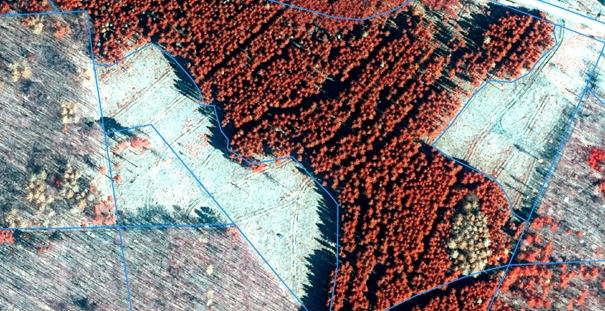
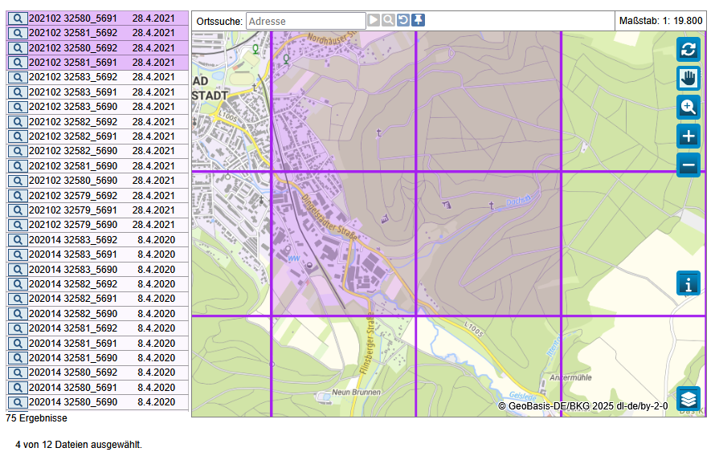
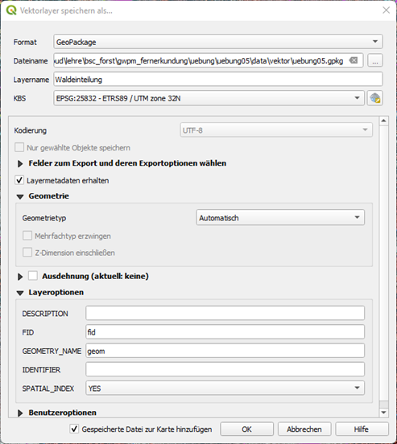
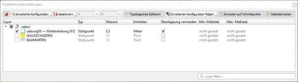
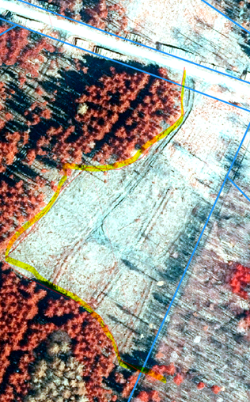
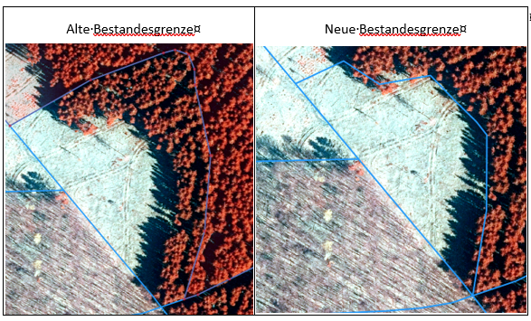
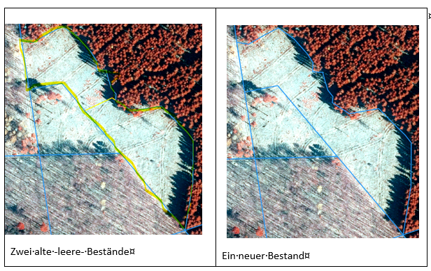

5 Lerneinheit 05: Aktualisierung der Waldeinteilung auf Basis von Ortholuftbildern

5.1 Lernziele & Aufgabenstellung
Aufgrund der langanhaltenden und ausgeprägten Trockenheit in den Jahren 2017 und 2018 ist es in vielen Waldbeständen zu Schäden gekommen. Davon betroffen ist auch das Forstamt Heiligenstadt in Thüringen. Im Rahmen der regelmäßigen Forsteinrichtung werden die aktuellen Bestandesgrenzen und die Waldeinteilung mithilfe von Luftbildern und im Gelände überprüft. Aufgrund der Schäden haben sich im FoA Heiligenstadt - gegenüber der letzten Einrichtung im Jahr 2012- einige Änderungen in der Bestockung der Bestände ergeben. In der Übung sollen anhand von aktuellen Luftbildern diese Änderungen erfassen und die Waldeinteilung des Forstbetriebes aktualisieren.
Lernziele
Die Studierenden sollen:
Passende Luftbilder des FoA Heiligenstadt in Thüringen beschaffen
Prinzipien des Digitalisierens von Geoobjekten kennen
Fortgeschrittene Editierfunktionen Nutzen um die Waldeinteilung unter Einhaltung einer sauberen Vektortopologie zu aktualisieren
Aufgaben
Beschaffen sie CIR-Ortholuftbilder von Geoportal Thüringen
Beschaffen sie die Waldeinteilung von Geoportal und filtern Sie dieses auf das FoA Heilligenstadt
Beschaffen Sie Informationen zu Waldschäden
Erstellen Sie auf Basis dieser Informationen eine aktualisierte Waldeinteilung
5.2 Aufgabe 0: Anlegen eine neuen QGIS-Projektes
Folgen sie der Anleitung aus LE01 Section 1.3 um eine neue Ordnerstruktur und ein neues QGIS-Projekt für LE05 anzulegen. In der Übung bietet es sich an den Ordner “daten” weiter in die Unterordner “vektor” und “raster” zu unterteilen.
5.3 Aufgabe 01: Recherche und Download aktueller Ortholuftbilder
Im ersten Schritt laden wir aktuelle Luftbilder vom Geoportal Thüringen unter folgendemLink herunter:
https://geoportal.thueringen.de/gdi-th/download-offene-geodaten/download-luftbilder-und-orthophotos
Der Teil des FoA, den wir bearbeiten möchten, wird durch folgende Kacheln abgedeckt:
32580_5691
32580_5692
32581_5691
32581_5692
Für diese Kacheln liegen digitale Orthophotos (DOP) aus einer Befliegung vom 28.4.2021 vor. Die Waldeinteilung die momentan vorliegt fand zum Stichtag 1.1.2012 statt. Insofern wäre eine Befliegung aus dem Jahr 2022 im zehnjährigen Rhythmus. Trotz der Abweichung von einem Jahr zum nächsten Stichtag (1.1.2022) sind die Daten für die Aktualisierung der Waldeinteilung geeignet.

Nach dem Download können sie die ZIP-Ordner entpacken und die vier Luftbilder in den Ordner ./daten/raster kopieren. Nach dem erfolgreichen Entpacken können die ZIP-Ordner aus dem Projektverzeichnis gelöscht werden.
Importieren sie die Ortholuftbilder und erzeugen sie eine CIR-Falschfarbendarstellung (siehe auch LE02 Section 2.5).
Stil kopieren
Mit den Funktionen „Stil kopieren“/“Stil einfügen“ können sie die Symbolisierung von einem Layer auf den anderen übertragen.
Fragen:
An welchem Tag wurden die Luftbildaufnahmen gemacht?
In welchem Koordinatenbezugssystem liegen die Ortholuftbilder vor?
5.4 Aufgabe 02: Import und Filterung der bestehenden Waldeinteilung
Der Landesbetrieb ThüringenForst stellt umfangreiche forstliche Geodaten kostenfrei zur Verfügung. Unter anderem werden Daten zur Waldeinteilung und Bestockung zur Verfügung gestellt, die wir in der Übung verwenden wollen. Diese Daten können im ESRI-Shapefile Format unter folgendem Link für ganz Thüringen heruntergeladen werden:
Entpacken sie die Dateien dieses shapefiles in den Ordner “../daten/vektor/” und fügen sie die Waldeinteilung in das QGIS-Projekt ein.
Für die Übung beschränken wir uns auf die Auswertung folgende Abteilungen des FoA Heiligenstadt (55):
Abt. 24, 25, 26, 27, 29, 30, 32.
Daher werden die Vektordatensätze entsprechend ausgewählt und gefiltert. QGIS bietet für die Selektion & Filterung unterschiedliche Werkzeuge an. In der Übung verwenden wir das „Filter“ Werkzeug. Mit diesem Werkzeug können Vektordaten über ihre Attribute gefiltert werden. Als Syntax für den Filteraufruf wird die Datenbankprogrammiersprache Structured Query Language (SQL) verwendet. Da wir die Auswertung auf oben genannte Abt. beschränken wollen, können wir folgenden SQL-Befehl für die Filterung verwenden:
"FOA"=55 AND "ABT" IN ('24','25','26','27','28','29','30','32')Zur Aktivierung der Filterfunktion klicken wir im Layer-Panel rechts auf unser Layer „Baumarten“ und wählen die Option „Filter“. In dem sich öffnenen Fenster können wir unten unter „Datenanbieterspezifischer Filterausdruck“ den oben genannten SQL Filterausdruck eintragen. Anschließend können sie über die Funktion „Testen“ überprüfen, ob der Filter funktioniert. Es sollten 60 Zeilen ausgegeben werden. Ist dies der Fall aktivieren wir den neuen Filter mit „o.k“.
Für die spätere Bearbeitung der Geometrien legen wir uns eine Kopie der gefilterten Bestände an und speichern diese im Geopackage Format ab. Dazu klicken wir im Layer-Panel rechts auf den Layer „Baumarten“ und wählen die Funktion „Export“ > „Objekte speichern als“. Wir speichern die Objekte als Geopackage im Ordner „…/vektor/“ unter dem Namen „uebung05.gpkg“ ab und nennen den Layer „Waldeinteilung“.

Für die weitere Bearbeitung soll die Darstellung der Waldeinteilung so angepasst werden, dass eine Aktualisierung durch die visuelle Interpretation erfolgen kann. Dazu sollen zunächst die Bestandesgrenzen als kontrastreiche Linien vor dem CIR-Luftbild gezeichnet werden. Hier bietet sich als Symbollayertyp „Rand_Einfache Linie“ mit einem hellen Blauton an. Wir können die Symbolisierung unter Eigenschaften -> Symbolisierung einstellen.
Für die Aktualisierung der Waldeinteilung benötigen wir eine zusätzliche Spalte mit einer Bestandesnummer. Wir können diese hinzufügen, in dem wir die Attributtabelle des neuen Layers öffnen. Nun aktivieren wir den Editiermodus mit dem kleinen Stiftsymbol und wählen „Neue Spalte“ hinzufügen.
Waldeinteilungsdaten
1.) Was ist der Stichtag der vorliegenden Waldeinteilung?
2.) Welche Informationen zu den Waldflächen enthält der Datensatz?
5.5 Aufgabe 03: Import von Informationen zu Waldschäden
Thüringen-Forst stellt außerdem die Ergebnisse einer satelliten-basierten Waldschadenserfassung zur Verfügung. Hierbei werden in einem automatisierten Verfahren Vitalitätsänderungen in Sentinel-2 Satellitenbildzeitreihen erfasst. Die räumliche Auflösung der Sentinel-2 Satellitenbilder beträgt 10m. Die Ergebnisse der Waldschadenskartierung werden zusammen mit anderen interessanten Informationen als WMS-Geodatendienst unter folgender URL zur Verfügung gestellt:
https://www.geoproxy.geoportal-th.de/geoproxy/services/forst/FORSTRichten sie WMS-Verbindung in QGIS ein und laden sie den Layer “Waldschäden”. Siehe dazu auch Section 3.4 in LE03.
5.6 Aufgabe 04: Aktualisierung der Waldeinteilung
5.6.1 Editieren von Vektordaten
Bevor wir mit der Aktualisierung der Bestandesgrenzen beginnen können, müssen wir zunächst die verschiedenen Werkzeuge zum Editieren von Polygonen kennenlernen. Um topologische Fehler beim Editieren der Geometrien zu reduzieren verwenden wir die „Einrastwerkzeuge“(snapping) in QGIS. Bei der ersten Verwendung müssen diese zunächst aktiviert/sichtbar gemacht werden. Dazu wählen wir:
Menü → Ansicht → Werkzeugleisten → Einrastewerkzeugleiste
In der Werkzeugleiste erscheint nun ein kleines Magnetsymbol. Wir aktivieren die Einrastfunktion durch Klick auf das Magnet-Symbol und wählen folgende Einstellungen:

Zusätzlich möchten wir die erweiterten Digitalisierungswerkzeuge in QGIS nutzen. Bei der ersten Verwendung müssen wir diese wie folgt aktivieren:
Menü → Ansicht → Werkzeugleisten → Erweiterte Digitalisierungswerkzeugleiste
QGIS bietet vielfältige Funktionen zum Editieren von Geometrien an. In dieser Übung wollen wir nur die wichtigsten vorstellen:
5.6.1.1 Polygon teilen
Wir können bestehende Polygone in zwei oder mehrere Teile zerschneiden. Diese Funktion ist immer dann sinnvoll, wenn z.B. ein schon kartierter Bestand aufgrund von Störungen weiter aufgeteilt werden soll. Dazu wählen wir das Tool „Objekte zerteilen“ in der Werkzeugleiste „Erweiterte Digitalisierungswerkzeuge“.
Bevor sie mit dem Zerteilen starten, achten Sie darauf das kein Polygon ausgewählt ist.
Wenn sie die Funktion „Teile zerlegen“ wählen wird ein Polygon in ein Multi-Polygon aufgeteilt und keine neue Zeile in der Attributtabelle angelegt!
Anschließend können wir ein Polygon zerteilen, in dem wir mit der Maus eine Trennlinie einzeichnen und diese nach dem letzten Stützpunkt mit einem Rechtsklick bestätigen. Vorteil dieses Verfahrens ist, dass keine Zwischenräume oder Selbstschneidungen entstehen. In der Attributtabelle wird eine neue Zeile mit den gleichen Werten angelegt. Hier müssen wir noch die Bestandsnummer ändern und in die neue Spalte „Bestand“ eine Zahl eintragen. Dies geht am einfachsten mit dem Attribut Editierwerkzeug, das sich in der Werkzeugleiste befindet.

Nach der Aktivierung des Werkzeugs können sie in das neue Polygon klicken und die Attribute anpassen.
5.6.1.2 Polygongrenzen verschieben
Um die Grenzen eines bestehenden Polygons zu ändern, verwenden wir das Stützpunktwerkzeug. Nach Auswahl des Werkzeuges klicken wir einmal in das zu ändernde Polygon. Daraufhin erscheinen die Grenzen und Stützpunkte dieses Polygons. Durch Rechtsklick können die Stützpunkte ausgewählt und mit der Maus verschoben werden. Durch Doppelklick auf die Grenzlinie können neue Stützpunkte hinzugefügt werden. Stützpunkte können mit der Taste „Enf“ oder mit dem Mülleimer-Symbol gelöscht werden.

5.6.1.3 Polygone vereinen
In Fällen, in denen Bestandesgrenzen aufgelöst werden müssen, können die Bestände vereint werden. Dazu werden zunächst die Polygone, die vereint werden sollen, mit dem Auswahlwerkzeug in der Werkzeugleiste selektiert. Zum Selektieren mehrerer Polygone halten sie die Shift-Taste beim Klicken gedrückt! Anschließend können wir das Werkzeug „Objekte verschmelzen“ wählen und das Dialogfeld mit den Attributtabellen bestätigen.

5.6.2 Aktualisierung der Waldeinteilung im FoA-Heiligenstadt
Nachdem wir nun die wichtigsten Funktionen zum Editieren von Geometrien kennengelernt haben, sollen sie den Umgang mit diesen Funktionen üben und die Waldeinteilung der ausgewählten Bestände aktualisieren. Gehen sie dabei systematisch vor, in dem Sie jede Abteilung einzeln bearbeiten.
Erstellen sie sich eine Kopie des Waldeinteilungslayers und setzen sie den Symbolisierungswert auf „Abt“. Dann sehen sie sofort welche Bestände zu einer Abteilung gehören. Alternativ können sie auch mit Filtern arbeiten.
ThüringenForst veröffentlicht Anweisungen für die Forsteinrichtung. Im Kapitel 4.1 „Flächengliederung des Forstbetriebes“ sind Hinweise für die Aktualisierung der Waldeinteilung enthalten. Zum Beispiel werden Mindestgrößen für Bestände (0.1ha) angegeben. Sie finden diese Anweisung im StudIP im Ordner „Literatur“. Konsultieren sie die Anweisungen, wenn sie Entscheidungen beim Digitalisieren treffen müssen.